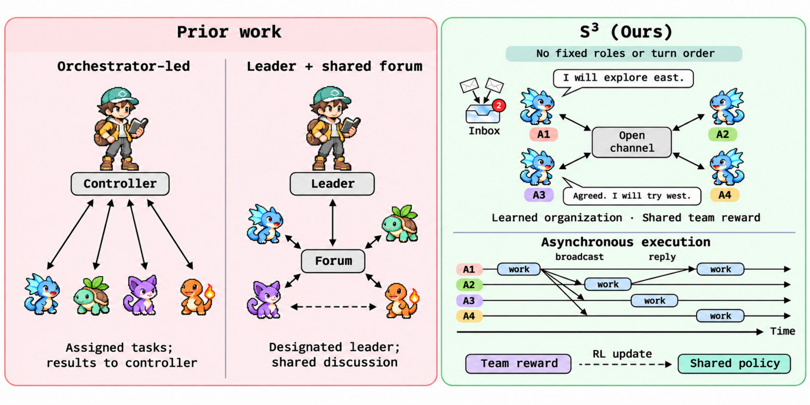
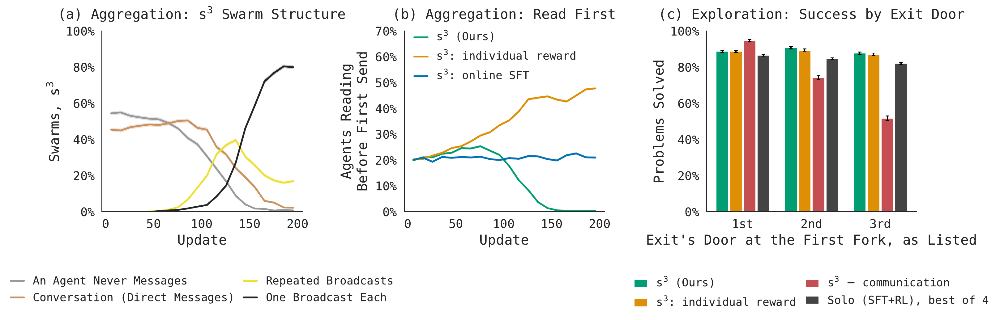

Simple Scaling of Swarms
via Cooperative Multi-agent RL
Can AI agents learn to work together without being told how? We train swarms of language models with no leader, no roles, and no turn order. They share one reward, message each other whenever they want, and learn to organize during training.
A cartoon of the idea, not one of our experiments.
Most multi-agent LLM systems fix their structure in advance: an orchestrator hands out subtasks, agents debate in rounds, or each gets a role like planner or critic.
These structures don't adapt to the task, and they break in familiar ways: duplicated work, too many messages, and subagents that never reconcile. In AI, learned behavior has repeatedly beaten hand-designed behavior. We think the same should hold for how agents organize.

A swarm is N copies of one model. Each agent works on its own copy of the task and can only coordinate through the messages it chooses to send.
The team succeeds if any agent solves the task, with a small cost for the share of the token budget it used:
We run 8 independent teams per problem and compare them, the way GRPO compares responses. Every token from team \(g\) gets that team's advantage:
message(to, text) and read_messages(). No limit on messages and no reward for sending them.
A sum rewards bigger teams for being bigger. An average rewards each agent for being right, so agents solve separately and argue toward consensus.
We never estimate each agent's credit. Comparing teams on the same problem handles it, including credit for helping.
For RL to discover useful communication, an agent has to be able to act on a teammate's discovery while it still matters. That shaped most of our design.
Agents continue as soon as their own tool call returns, so no one waits on the slowest teammate.
New messages add an unread count to the recipient's history. Idle agents wake up; reading is their choice.
Generation runs in chunks of at most 1,024 tokens, so no agent hogs the inference server and notifications have a place to land.
Rollouts can lag up to four updates, and exploration runs in FP8. IcePop plus score centering corrects the mismatch.
Teammates' messages and tool results are in context but masked from the loss.
Solo agents get the same problems, trajectories per update, and token budget. At test time we run N copies as best-of-N.
Each task isolates one reason a team beats an individual, and they get harder in opposite ways as the swarm grows.
The general problem: each agent holds private information the others need, and the answer only exists once it's pooled. Think agents reading different files of a codebase, or sensors each seeing part of a scene.
Our task: each agent holds one private number, and the team must return all N, sorted. Agents have to share, read, avoid duplicates, and wait until they've heard from everyone.
If each needed message gets through with probability \(q<1\), success falls off exponentially with N.
The general problem: agents search for a solution as fast as possible. Any one of them could find it alone, but sharing what they've ruled out lets a team split the search, like parallel research agents or a distributed bug hunt.
Our task: each agent searches its own copy of a tree of 391 rooms for one exit, usually without the budget to search it all.
Independent best-of-N keeps improving with N, so communication has to beat a rising baseline.
The first follows our aggregation task. The second is a stylized search problem, not our maze.
With four agents, s³ solves 93% of held-out problems, compared with 35% when imitating its own successful swarms and 13% with individual rewards.
s³ agents also talk less: each broadcasts its number about once, and everyone sends about equally. In the controls, a few agents do most of the talking.
We train with four agents and evaluate with up to sixteen. With eight agents, s³ solves over 25× as many problems as the strongest baseline, and stays ahead through twelve. At sixteen, every method struggles.
These agents start with no demonstrations, so their coordination comes entirely from RL.
Early on, many swarms have an agent that never shares. Swarms then move to direct messages, then repeated broadcasts, and by the end about 80% settle on one broadcast per agent, sent before reading.
If each agent is rewarded only for its own answer, sharing only helps others. Each agent learns to wait for someone else to go first, and eventually nobody shares. It's a public goods game, and a shared reward removes it.

Any agent can find the exit alone, so the question is whether talking helps beyond running more agents. Turning messaging off lowers four-agent success by 19 points, and agents repeat nearly twice as much of each other's search.
Every agent sees doors in the same order, so without messages they all take the same first door. s³ agents claim different branches and report the ones they've finished, so they succeed wherever the exit is. Four s³ agents nearly match six solo agents, and with six, s³ beats best-of-six by about 7 points.
Individual rewards are fine for exploration but collapse in aggregation, where sharing only helps others.
Turning messaging off costs 19 points and roughly doubles repeated search.
Without SFT, RL still helps, but after 200 steps both trail SFT+RL and the swarm loses its edge over best-of-4.
We're scaling s³ to larger models and more sophisticated tasks.
So far we use small models (Qwen3-0.6B and 1.7B) on two tasks. The traces point to clear next problems: agents sometimes ignore information they have, repeat a teammate's search, or trust unchecked reports.
Our main takeaway is that agents can learn to collaborate in the same training process where they learn the task, and that this carries over to larger swarms. We're excited to see what it makes possible for multi-agent systems.
@article{jha2026s3,
title = {s$^3$: Simple Scaling of Swarms via Cooperative Multi-agent RL},
author = {Jha, Kunal and Faria, Gon{\c{c}}alo and Li, Shuyue Stella and Geng, Scott and
Brahman, Faeze and Smith, Noah A. and Tsvetkov, Yulia and
Kleiman-Weiner, Max and Jaques, Natasha},
journal = {Preprint},
year = {2026},
url = {https://scalingswarms.com}
}